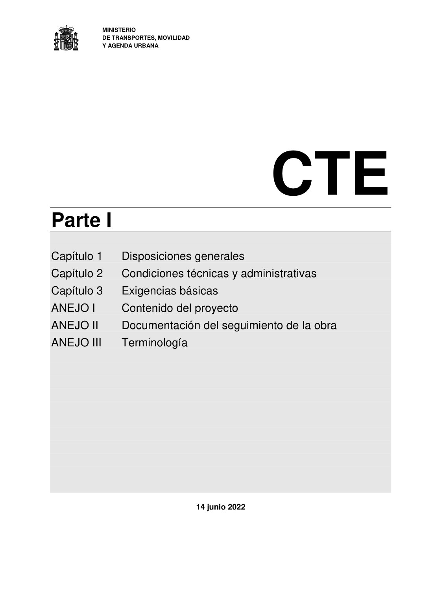

Parte I · edición 2022-06-14 · capa oficial
Documento PARTE-I-oficial · SHA-256 del PDF eaed39b98fbe715e9db817ab9bde93a5031c3d2c07440dd6a8653572b053a07f
Página física 1 de 27.
Copia fiel del PDF fuente · Fuente oficial
Ficha de la disposición en la fuente oficial
Formato: Texto de la página (Markdown)
MINISTERIO DE TRANSPORTES, MOVILIDAD Y AGENDA URBANA CTE Parte I Capítulo 1 Disposiciones generales Capítulo 2 Condiciones técnicas y administrativas Capítulo 3 Exigencias básicas ANEJO I Contenido del proyecto ANEJO II Documentación del seguimiento de la obra ANEJO III Terminología 14 junio 2022
